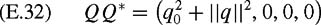

|
| |||||||||||||
|
|
||
The axis-angle parameterization described above parameterizes a rotation matrix by three parameters (given by (E.21)). Quaternions, which are closely related to the axis-angle parameterization, can be used to define a rotation by four numbers. It is straightforward to use quaternions to define an atlas for SO(3) using only four charts. Furthermore quaternion representations are very convenient for operations such as composition of rotations and coordinate transformations. For these reasons, quaternions are a popular choice for the representation of rotations in three dimensions.
Quaternions are a generalization of the complex numbers to a four-dimensional space. For this reason, we begin with a quick review of how complex numbers can be used to represent orientation in the plane. A first introduction to complex numbers often uses the example of representing orientation in the plane using unit magnitude complex numbers of the form a + ib, in which . In this case, the angle θ from the real axis to the vector is given by atan2(b, a), and it is easy to see that cos θ = a and sin θ = b. Since a, , we can consider this as an embedding of S1 in the plane.
Using this representation, multiplication of two complex numbers corresponds to addition of the corresponding angles. This can be verified by direct calculation as
While a complex number a + ib defines a point in the complex plane, a quaternion defines a point in a four-dimensional complex space, q0 + iq1 + jq2 + kq3. Here, i, j, and k represent independent square roots of negative one. They are independent in the sense that they do not combine using the normal rules of scalar multiplication. In particular, we have
| (E.23) |
|
| (E.24) |
|
It is not a coincidence that multiplication of i, j, and k is similar to the vector cross product for the orthogonal unit basis vectors, i = [1, 0, 0]T, j = [0, 1, 0]T, and [0, 0, 1]T.
Complex numbers with unit magnitude can be used to represent orientation in the plane simply by using their representation in polar coordinates. Likewise, quaternions can be used to represent rotations in 3D. In particular, for a rotation about an axis n = [nx, ny, nz]T by angle θ, the corresponding quaternion, Q, is defined as
| (E.26) |
|
When we define the axis of rotation to be a unit vector, the corresponding quaternion has unit norm, since
| (E.27) |
|
Quaternions with unit norm are sometimes referred to as rotation quaternions.
It is straightforward to apply the results from section E.3 to determine the rotation matrix R ∊ SO(3) that corresponds to the rotation represented by a rotation quaternion. For the quaternion Q = (q0, q1, q2, q3) we have
Quaternions can be used to define an atlas for SO(3) comprising four charts, (Ui, φi), with . This is most easily done by using two steps. First, for a rotation matrix R,we determine the corresponding quaternion Q. Then, we use Q to determine which chart applies (i.e., we implicitly define the neighborhoods Ui in terms of Q), and use the appropriate φi to define the local coordinates.
Determining the quaternion that correponds to a rotation matrix amounts to solving the inverse of (E.28), and this can be done by a method similar to that given for the axis-angle parameterization of section E.3. In particular, for rotation matrices R such that Tr(R) ≠ ± 1 we have
| (E.29) |
|
| (E.30) |
|
To define the four charts, we first define the four neighborhoods
These are not actually open sets (due to the nonstrict inequality in the set definitions), but they can be used to define open sets using their interiors. Now we define the coordinate maps φi as
As we have seen above, Ri ∊ SO(3) represents a rotation, and the composition of successive rotations, say R1 and R2, is represented by the rotation matrix R = R1 R2. Likewise, multiplication of quaternions corresponds to the composition of successive rotations. In particular, if Q1 and Q2 are two quaternions representing a rotation by θ1 about axis n1 and a rotation by θ2 about axis n2, respectively, then the result of performing these two rotations in succession is represented by the quaternion Q = Q1 Q2. Using (E.22) through (E.25) it is straightforward to determine the quaternion product. In particular, for two quaternions, X and Y, we compute their product, Z = XY, as
By equating the real parts on both sides of the final equality, and by equating the coefficients of i, j, and k on both sides of the final equality, we obtain
The quaternion Q = (q0, q1, q2, q3) can be thought of as having the scalar component q0 and the vector component q = [q1, q2, q3]T. Therefore, one often represents a quaternion by a pair, Q = (q0, q). Using this notation, q0 represents the real part of Q, and q represents the imaginary part of Q. Using this notation, the quaternion product Z = XY can be represented more compactly as
in which × denotes the vector cross product operator.
For complex numbers, the conjugate of a + ib is defined by a − ib. Similarly, for quaternions we denote by Q* the conjugate of the quaternion Q, and define
| (E.31) |
|
With regard to rotation, if the quaternion Q represents a rotation by θ about the axis n, then its conjugate Q* represents a rotation by θ about the axis −n. It is easy to see that
| (E.32) | 
|
and that
| (E.33) |
|
A quaternion, Q, with its conjugate, Q*, can be used to perform coordinate transformations. Let the point p be rigidly attached to a coordinate frame , with local coordinates (x, y, z). If Q specifies the orientation of with respect to the base frame, and T is the vector from the world frame to the origin of , then the coordinates of p with respect to the world frame are given by
| (E.34) |
|
in which (0, x, y, z) is a quaternion with zero as its real component. Quaternions can also be used to transform vectors. For example, if n = (nx, ny, nz)is the normal vector to the face of a polyhedron, then if the polyhedron is rotated by Q, the new direction of the normal is given by
| (E.35) |
|
|
|
||
|